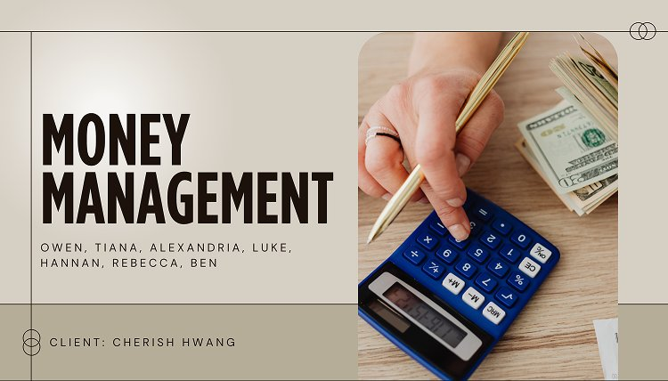
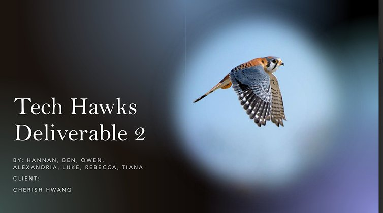
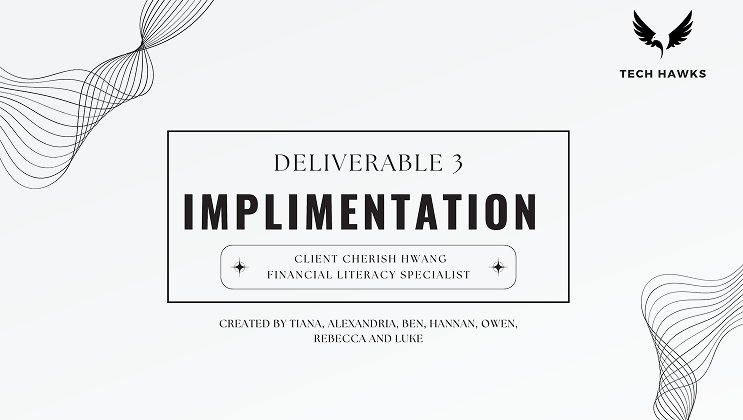

Client Project
Money Management
Empowering students with financial literacy through Wilfrid Laurier's Dollars & Sense program.
Role
UX Researcher & Designer
Team
Tech Hawks: Owen, Tiana, Alexandria, Luke, Hannan, Rebecca, Ben
Client
Cherish Hwang, Financial Literacy Specialist, Laurier
Tools
Interviews, personas, Canva, Google Drive
The Challenge
Students weren't engaging with Laurier's Dollars and Sense program. They didn't know it existed, and the format felt disconnected from their actual financial lives.
My Approach
Interviewed 20+ students, built five personas, and used SCAMPER and rapid sketching to generate solution concepts before prototyping and testing.
The Result
Three research deliverables handed to the client, with actionable recommendations and an implementation roadmap for the program.
My Contribution
Team of 7 (Tech Hawks) for client Cherish Hwang. I worked on the user research, persona development, and the ideation sessions that produced the final concepts.

The Problem
- Students lack awareness of Dollars & Sense resources and don't know where to start with financial planning
- Traditional presentations feel disconnected from students' real-world financial experiences and immediate needs
- Students prefer interactive, peer-driven learning over formal educational formats for financial topics
- Budgeting tools need to be mobile-friendly and integrate with students' existing routines
Solution
- Gamification and rewards: challenges, progress tracking, and achievement badges to make learning more motivating
- A peer-to-peer learning network with mentorship programs and shared goal-setting communities
- Mobile-first budgeting tools that fit students' daily routines and existing apps
- Personalized content delivery, with financial literacy material tailored to different student personas
Process
Discovery & User Research
Conducted comprehensive interviews and surveys with students to understand their financial literacy challenges, current behaviors, and unmet needs.
Persona Development
Created detailed user personas representing diverse student populations with different financial situations, goals, and barriers to engagement.
Ideation & Design Thinking
Used SCAMPER methodology and rapid sketching to generate creative solutions that address identified pain points while remaining feasible for implementation.
Prototyping & Testing
Developed medium-fidelity prototypes and tested them with students to validate usability, engagement, and effectiveness in addressing identified needs.
What the research told me
What 20+ student interviews and surveys surfaced.
Insight 01
Awareness, not interest, is the gap
Students didn't know Dollars & Sense existed or where to start, so visibility mattered more than content quality.
Insight 02
Format is the barrier
Students weren't short on financial facts. They were short on a format that felt like it was actually for them.
Insight 03
Peers beat presentations
Interactive, peer-driven learning consistently beat formal educational formats for financial topics.
Exploring the options
SCAMPER methodology and rapid sketching produced 15+ solution concepts.
Directions Generated
- Gamification and rewards with challenges, progress tracking, and achievement badges
- A peer-to-peer learning network with mentorship and shared goal-setting
- Mobile-first budgeting tools that integrate with students' existing routines and apps
- Personalized content delivery tailored to each of the five personas
Why These Four
- Each one maps directly to a finding: gamification for motivation, peers for the learning-format preference, mobile-first for the routine-integration need, personalization for the persona diversity
What came out of it
Delivered three comprehensive research deliverables to Cherish Hwang, providing actionable insights and implementation roadmaps for the Dollars & Sense program, balancing what students actually needed against what the university could realistically implement.
Deliverable 2: Ideation and Concepts

Deliverable 3: Implementation

What I learned
Financial literacy is a topic people already feel judged about, so the research had to work harder than usual to get honest answers. Framing interviews around habits and routines instead of directly asking about money problems got us much more genuine responses than a straightforward survey would have. It also reinforced that the fix wasn't more information. Students weren't short on financial facts, they were short on a format that felt like it was actually for them.